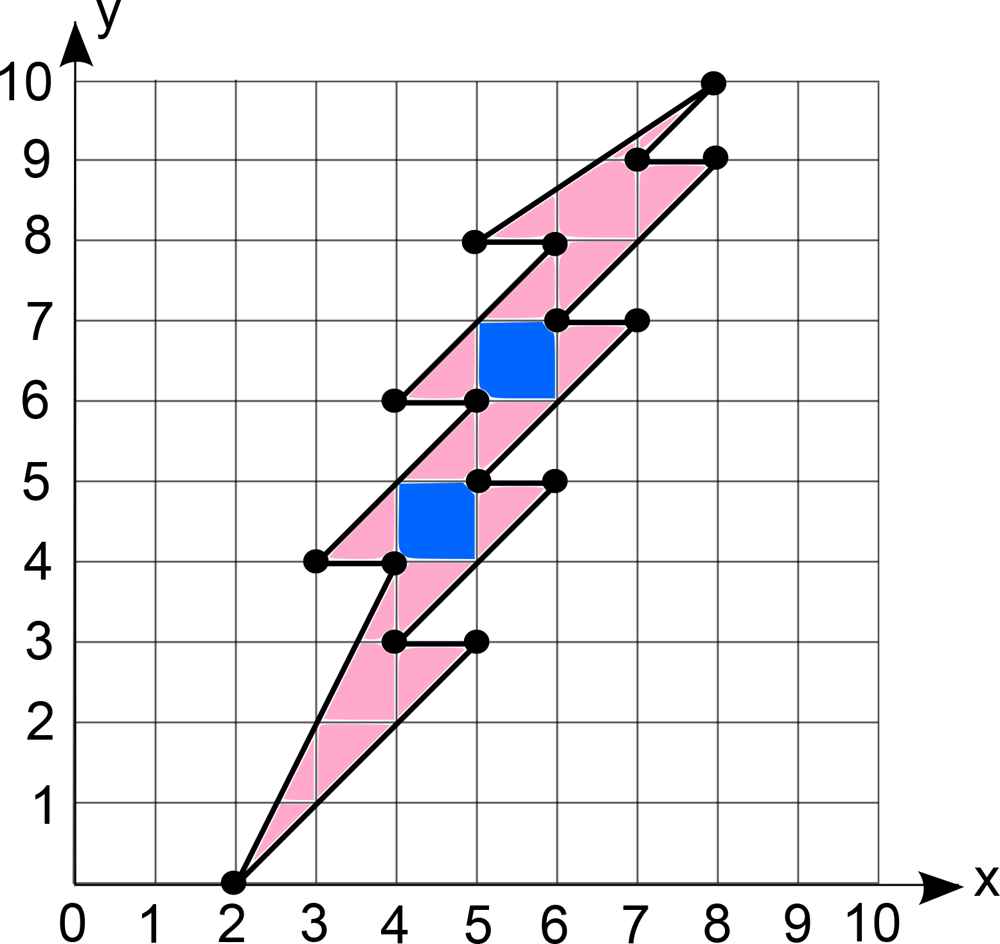

Problem
Plot the following ordered pairs on the Cartesian plane below. Join each point to the next with a straight line.
\((2,0)\), \((4,4)\), \((3,4)\), \((5,6)\), \((4,6)\), \((6,8)\), \((5,8)\), \((8,10)\), \((7,9)\), \((8,9)\), \((6,7)\), \((7,7)\), \((5,5)\), \((6,5)\), \((4,3)\), \((5,3)\), \((2,0)\)
Estimate how many square units are enclosed by the figure created in part a) by counting whole squares and combining partial squares to make whole squares.
Using your estimate from part b), estimate the percent of the entire grid that is occupied by the enclosed shape.
Not printing this page? You can plot the points on our interactive worksheet.
Solution
The points are plotted on the Cartesian plane.
Note that since this is an estimation, answers may vary.
The enclosed shape shown contains \(2\) whole squares and \(19\) partial squares.

For simplicity in our estimation, we will count all partial squares as half a square.
Thus, \(19\) partial squares \(\div~2 = 9.5\) whole squares.
Then, \(9.5\) whole squares \(+~2\) whole squares \(= 11.5\) whole squares.
Since each whole square has area \(1\) unit\(^2\), that means approximately \(11.5\) units\(^2\) are enclosed by the figure.Note that since this is an estimation, it is not the only correct answer. It turns out that the exact area of the figure is \(11\) units\(^2\). You can verify this as an exercise if you like, by dividing the figure into triangles.
There are \(100\) squares on this \(10\) by \(10\) grid.
In our estimation in part b), we found that \(11.5\) of the squares are occupied by the shape. Thus, about \(\frac{11.5}{100} = 11.5\%\) of the entire grid is occupied by the enclosed shape.
Using the exact area given in part b), we find that \(\frac{11}{100} = 11\%\) of the entire grid is occupied by the enclosed shape.